Префектура Тояма · залив Тояма · еда
Залив Тояма: почему здесь такая вкусная рыба и где попробовать зимнего бури и гэнгэ
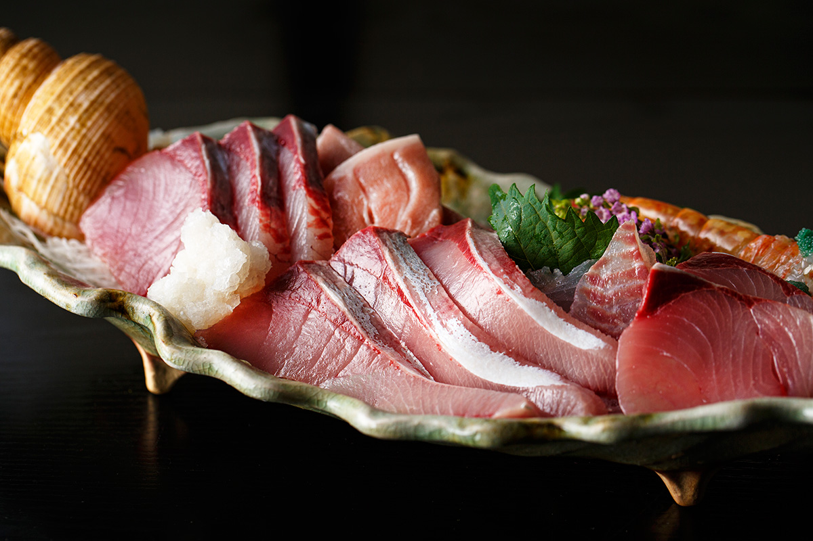
В заливе Тояма живут около 500 видов рыб, и свежие морепродукты здесь есть в любое время года. Но зима особый сезон: в эти месяцы лучше всего бури (японский желтохвост), красный краб и гэнгэ, глубоководная рыба. Почему рыба Тоямы так хороша, объясняет сама природа.
Залив
Горы у самого моря
Рыба из префектуры Тояма известна по всей Японии, и у её вкуса две главные причины. Первая в том, как близко здесь горы к морю. Над заливом поднимается хребет Татэяма с вершинами около 3000 м, а сам залив уходит в глубину больше чем на 1000 м. От горных пиков до морского дна выходит перепад около 4000 м.
Дождевая вода с гор стекает в залив реками и подземными водами. В этой воде много питательных веществ, и в ней размножается планктон. Планктоном кормится мелкая рыба, а мелкой рыбой крупная и средняя, которая за ней и приходит в залив.
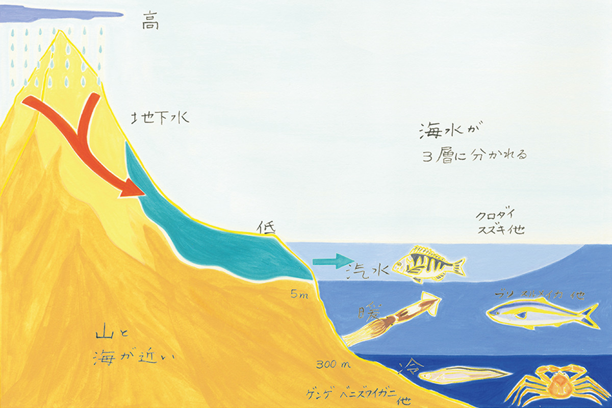
Залив Тояма один из самых глубоких в Японии, и вода в нём лежит слоями разной температуры. У поверхности море слегка опреснено речной водой. Ниже идёт тёплое Цусимское течение, его температура меняется по сезонам примерно от 10 до 30 °C. Глубже 300 м начинается холодная собственная глубинная вода Японского моря, она держится до глубины около 1200 м. Разная вода означает разных обитателей, и отсюда такое многообразие рыбы.
Откуда взялся такой рельеф? Ответ уходит во времена рождения Японских островов. Примерно 25–15 млн лет назад от Азиатского материка откололся кусок суши и сдвинулся в сторону Тихого океана, где и стал Японским архипелагом. Разлом между ними превратился в Японское море, а трещины того времени стали глубоководными впадинами, такими как залив Тояма. Вокруг полуострова Ното до сих пор много разломов той эпохи, а позже сам полуостров поднялся, и побережье приобрело нынешний вид.
Природный садок для рыбы
Вторая причина в форме залива. С запада его закрывает большой полуостров Ното, выступающий в Японское море, и залив получается полузамкнутым. Глубокие подводные каньоны тянутся почти до берега, и залив работает как огромный природный садок: он заманивает мигрирующую рыбу, прежде всего бури, в самую глубину бухты.
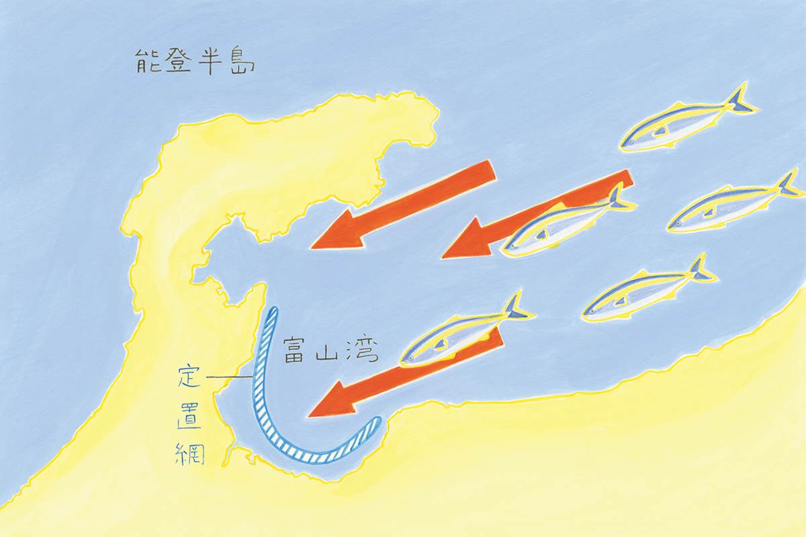
У берега рыбу ждут около 80 ставных неводов особой местной конструкции. Получается двойной садок, и рыбаки почти каждый день привозят свежий улов. Неводы стоят недалеко от берега, рынки рядом, а для рыбы ничего важнее свежести нет.
Круглый год
Сироэби и хотаруика
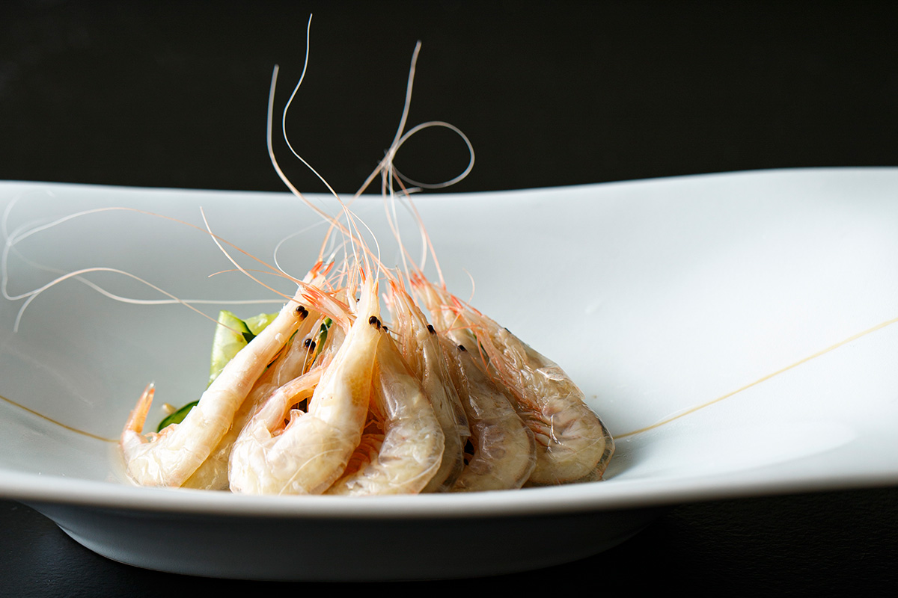
За прозрачность сироэби называют «драгоценностью залива Тояма». Говорят, в больших количествах их ловят только здесь. Креветки живут в подводных каньонах залива и отличаются сладким вкусом. Портятся они быстро, поэтому раньше сырыми их ели только в сезон. Современная заморозка сохраняет свежесть, и сироэби в лучшем виде можно попробовать в любое время года.
У каждого сезона в заливе свой улов: в июне и июле, например, созревают скальные устрицы ивагаки. Весной обязательно стоит попробовать хотаруику, светлячкового кальмара. Его приносит в залив Цусимское течение. У берега дно резко поднимается, со дна бьют подземные воды, и самки поднимаются с восходящим потоком к поверхности метать икру. В Тояме их ловят ставными неводами именно в нерест, поэтому кальмары здесь крупные и с насыщенным вкусом, какого больше нигде не найти.
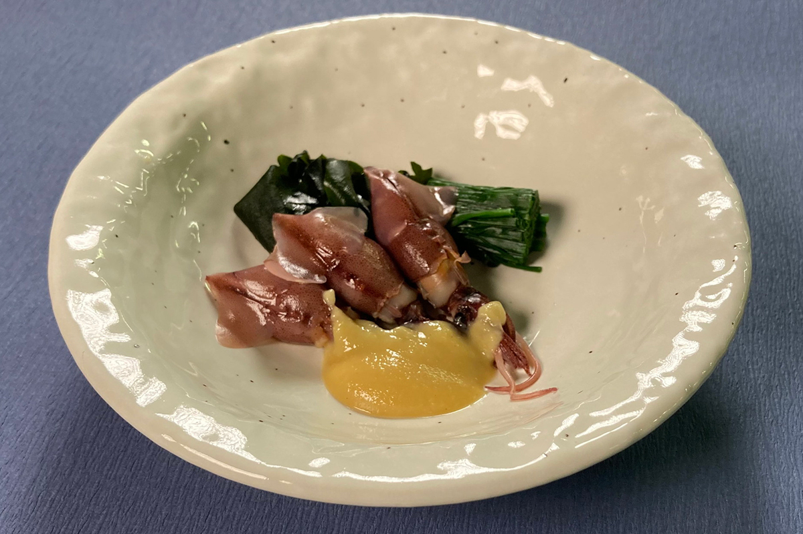
Бури
Зимний бури и гром над морем
Каждый год, когда над бушующим зимним Японским морем гремят грозы «бури-окоси», на северном побережье Хонсю начинается сезон бури, японского желтохвоста. Бури рождаются в тёплых водах на западе Кюсю, весной и летом поднимаются с Цусимским течением на север и до осени кормятся у Хоккайдо. Когда к концу осени вода остывает, рыба идёт обратно на юг.
По дороге часть косяков заходит в залив Тояма. После долгого пути мясо у бури плотное, а местная мелкая рыба даёт им ещё и толстый слой жира. Таких рыб и продают как лучших бури Тоямы. Неводы стоят близко к берегу, и рыбу, выловленную утром, можно съесть в тот же день. Из свежего бури готовят всё: сашими, бури-сябу, рыбу на гриле, бури с дайконом, тушёные головы и обрезки и даже солёные потроха сюто к сакэ.
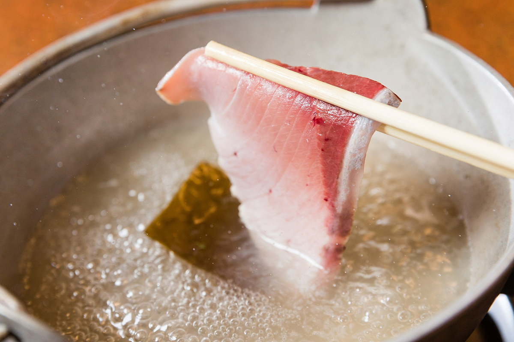
Бури в Хими: «Каппо Сюгэцу»
О блюдах из бури нам рассказал хозяин ресторана «Каппо Сюгэцу». Он учился в ресторанах префектуры, а потом открыл своё заведение в родном городе Хими, рыбацком порту на западном берегу залива. Больше 40 лет он работает с бури и другой рыбой Тоямы. Чтобы сохранить местную кухню, он преподаёт на курсах мастеров еды Тоямы и входит в правление кулинарного общества префектуры.
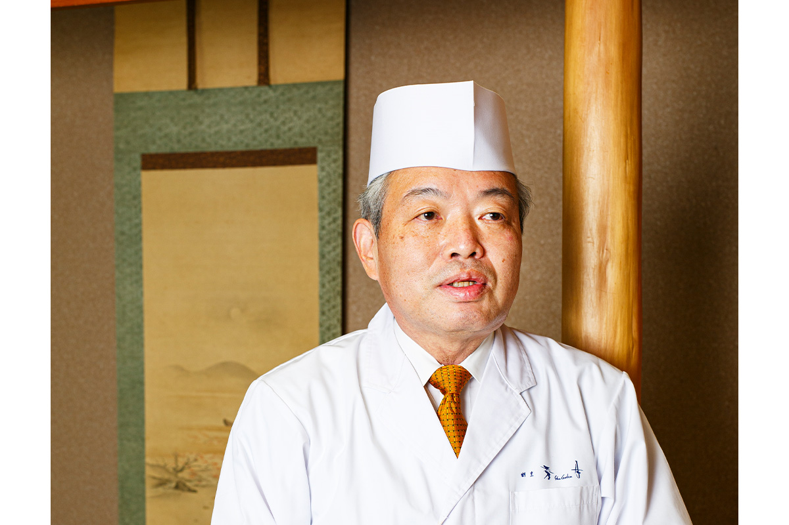
«В бури собрана вся кухня Тоямы»
хозяин «Каппо Сюгэцу»
Бури-сябу это местная версия сябу-сябу. Ломтики с брюшка и спинки, где больше всего жира, на мгновение опускают в кипящую воду и едят чуть сырыми внутри. Нарезка тонкая, поэтому особенно чувствуются свежесть рыбы и вкус жира.
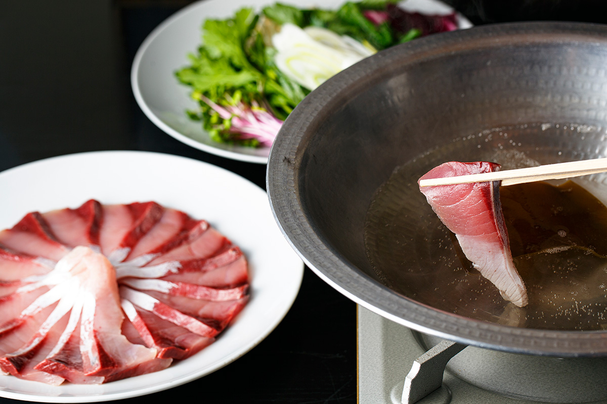
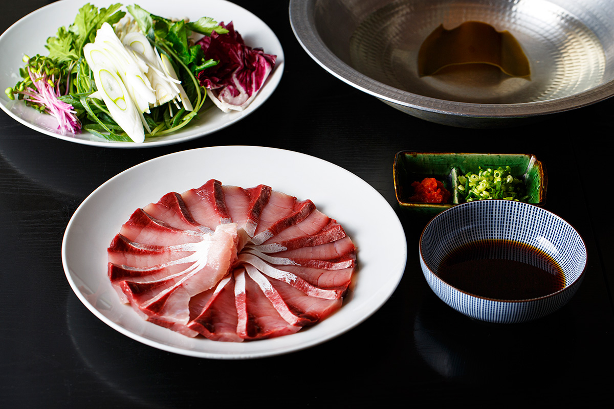
Бури с дайконом это классика рыбной кухни. Голову и обрезки бури слегка солят, обдают кипятком, чтобы ушёл рыбный запах, и тушат вместе с дайконом. Дикий бури Тоямы свежий и без запаха, поэтому хозяин советует попробовать и вариант с мисо.
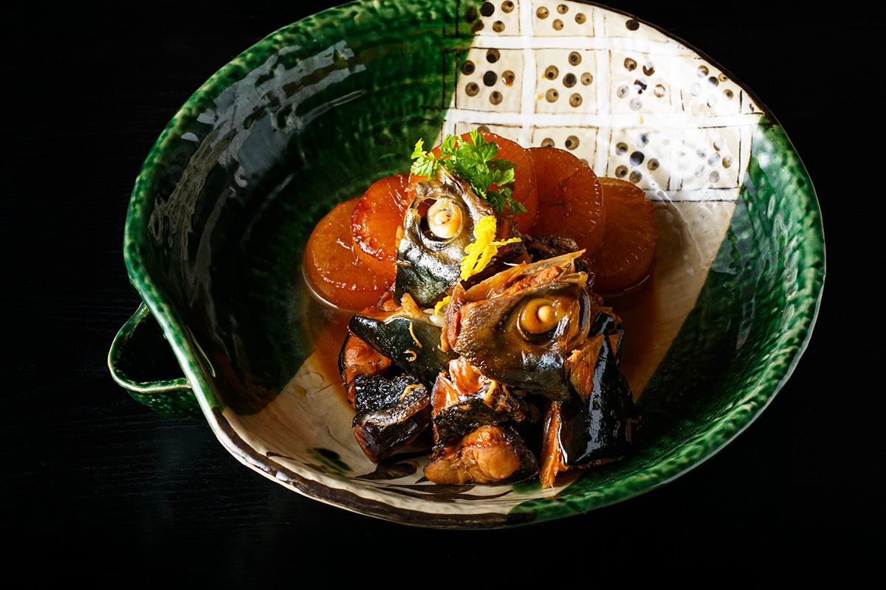
В сашими лучше всего видно, сколько жира бури набрал за долгий путь по морю. Толстые ломтики упругие, и во рту жир и вкус мякоти раскрываются одновременно.
«Каппо Сюгэцу»
- Адрес
- префектура Тояма, Хими, Сайвай-мати, 9-78
Гэнгэ
«Призрачная рыба» из глубины
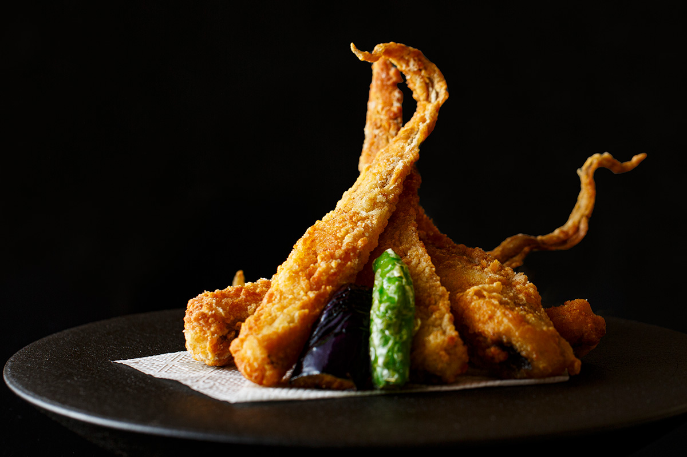
Гэнгэ живёт в холодной воде на глубине от 200–300 м и ниже. У неё вид типичной глубоководной рыбы, и раньше рыбаки её не любили: она попадалась в донные тралы, которыми ловят сладкие креветки, и считалась сорной рыбой. В рыбе много воды, она быстро портится, и есть её могли только в рыбацких семьях.
Всё изменилось, когда обратили внимание на студенистый слой, который покрывает всё тело гэнгэ: в нём много коллагена. Рыба быстро стала популярной, и её стали называть «призрачной рыбой», которую почти невозможно попробовать. Сразу после улова гэнгэ кладут в холодную воду, чтобы сохранить её вкус, и её можно встретить в самых разных блюдах.
В рыбацких домах из неё варили суп мисо и прозрачные супы, где студенистая мякоть была кстати. В ресторанах гэнгэ чаще жарят: если удержать влагу внутри, мякоть в масле становится воздушной. Самые известные блюда это караагэ, тацута-агэ и тэмпура.
Гэнгэ в Уодзу: «Кайфутэй»
Рыбные блюда показал шеф-повар ресторана японской кухни «Кайфутэй» в Уодзу, портовом городе на восточном берегу залива. Ресторан вырос из рёкана, славившегося кухней и основанного в 1908 году. Шеф родился в 1984 году и представляет пятое поколение семьи. После учёбы в японском ресторане отеля он вернулся домой, занимается и кухней, и делами ресторана, а ещё основал общество, которое изучает и продвигает местную кухню Уодзу.
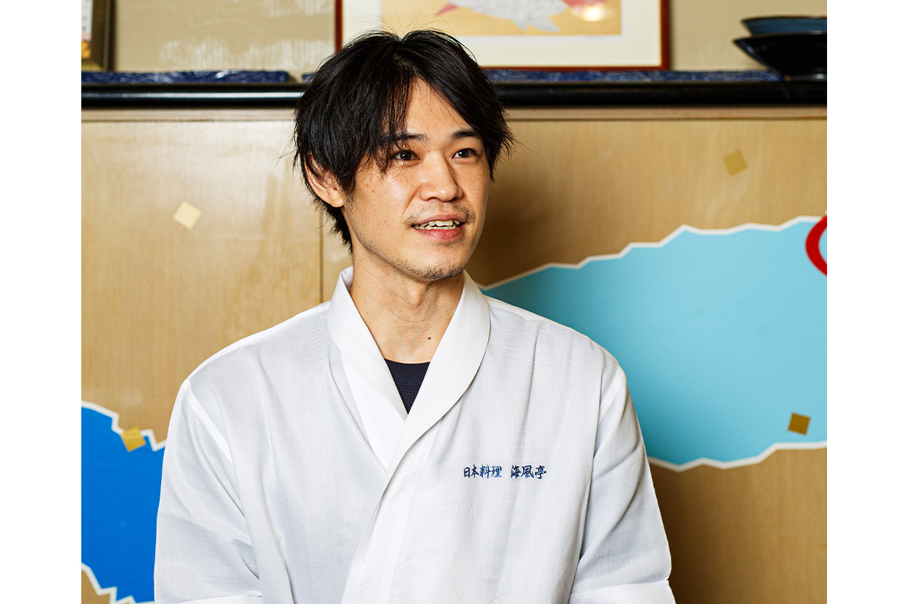
«Приезжайте почувствовать традиции и вкус кухни Уодзу»
шеф-повар «Кайфутэй»
Гэнгэ в стиле тацута-агэ, маринованную и обжаренную в крахмале, прославила известная манга о гурманах. После неё блюдо стало визитной карточкой Уодзу, а караагэ из гэнгэ подают во многих ресторанах города.
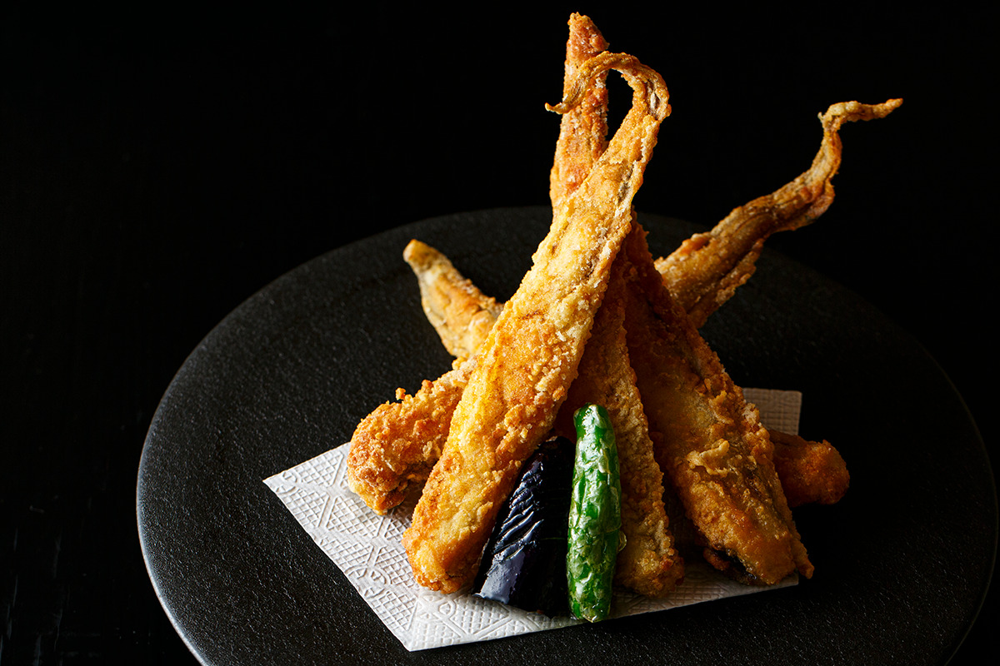
Чтобы тэмпура из гэнгэ таяла во рту, важны свежесть и ловкость повара. Живой рыбе отрезают голову, снимают кожу, кляр запирает внутри влагу и студенистую мякоть, а жарят быстро в очень горячем масле.
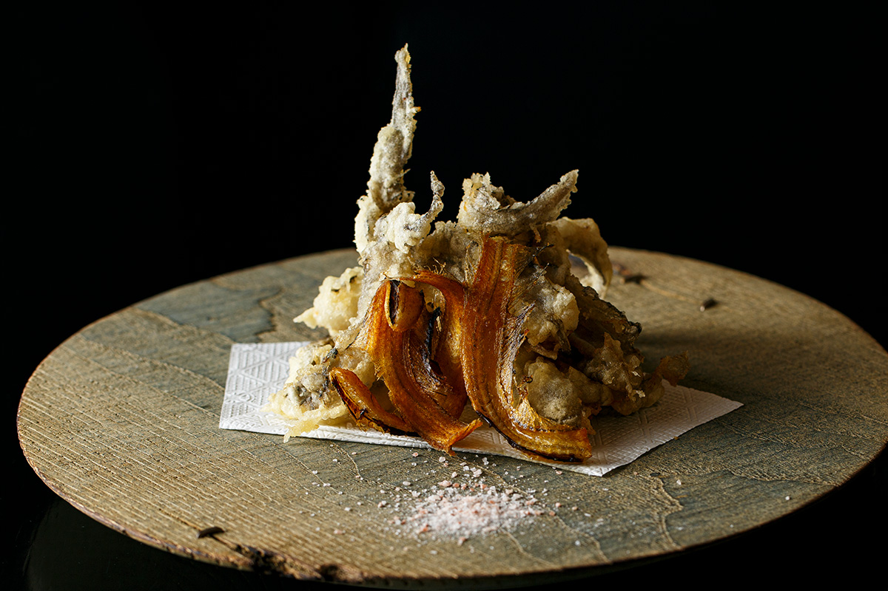
Вяленую гэнгэ ценят как подарок: так рыбу, которую едят только на месте, можно увезти с собой. Её слегка подогревают на огне, и получается отличная закуска к сакэ Тоямы.
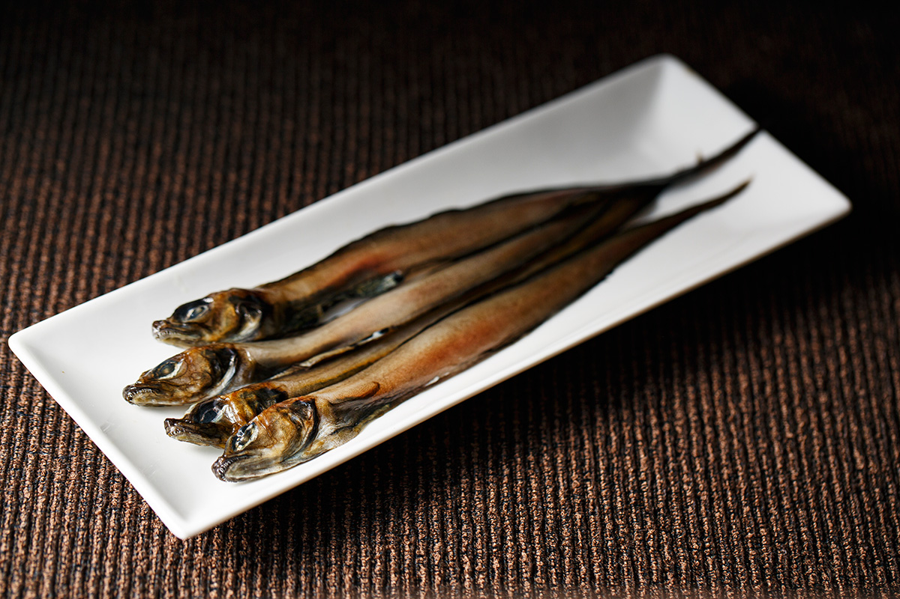
«Кайфутэй»
- Адрес
- префектура Тояма, Уодзу, Сякадо, 1-13-5, гостиница «Минамикан», 1-й этаж
- Сайт
- minamikan.com
Фото: Синпэй Фукадзава, Роми Ватанабэ (иллюстрации), Министерство сельского, лесного и рыбного хозяйства Японии.